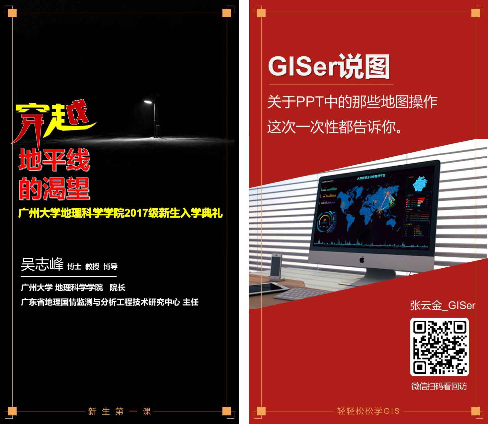
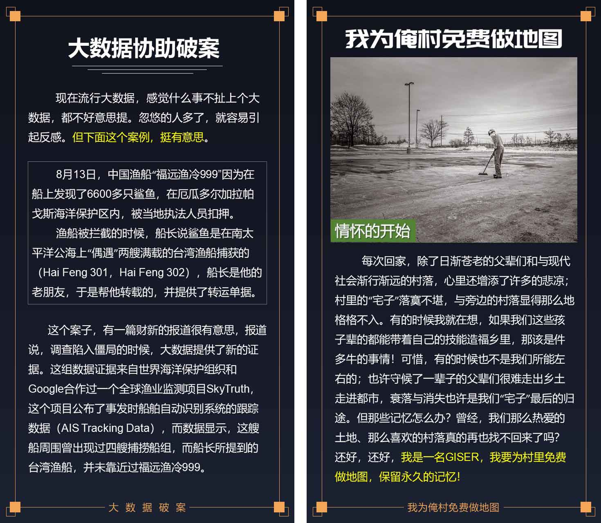
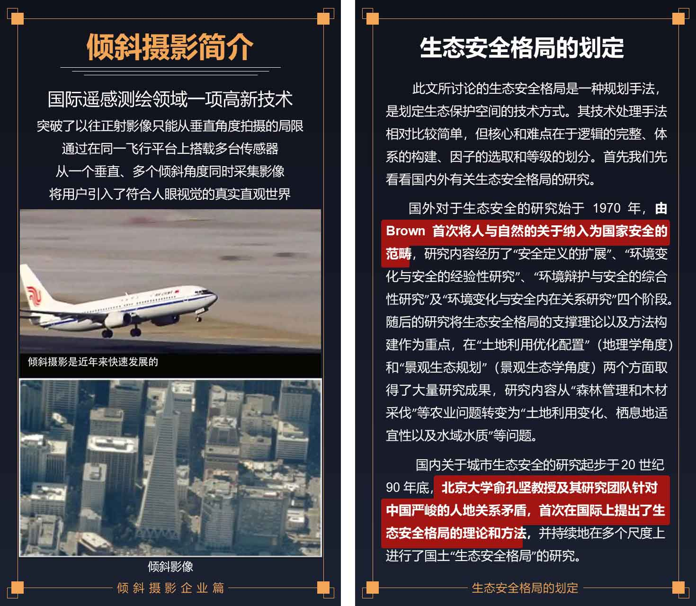
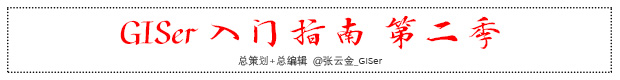
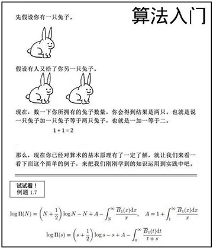

GISer入门指南第2季正式发布了。👏👏👏
GISer入门指南 第二季 - 目录
- 穿越地平线的渴望
- GISer说图
- 大数据破案
- 我为俺村免费做地图
- 我为俺村免费做系统
- 给你一台无人机，你能用它做点啥？
- 倾斜摄影应用—超图篇
- 倾斜摄影应用—伟景行篇
- 生态安全格局的划定
- 扩展学习资源
精彩内容



获取方式
关注『GISer学习团』公众号（微信搜索“GISer12345”），回复「第二季」即可免费获得，回复「第一季」还可获取第一季。
- 第二季: https://pan.baidu.com/s/1nCE_yrEh2d4-4IYkRnZ18Q 密码: mre7
- 第一季: https://pan.baidu.com/s/1erBFD1Gl2PkDCLflxQ6CPw 密码: kt45

微微一笑很倾城

前两天在群里看到一张图「算法入门」，纷纷表示这个门没法入，这就是从《入门到放弃》啊！ (- 😭 -)，还是选择 GIS 吧！